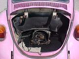
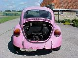
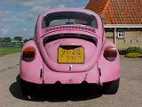

1973 Beetle 1303S
"Skunk"
| General info
|
The Story
january 15th, 2003
I bought this car right
after I sold the 1971 Fastback in the summer of 2002. It was relatively
cheap and looked good. A nice daily 'salt' driver for the winter I thought.
Unfortunately we are in the middle of winter as we speak and I have had
no time and money so far to work on the car. So now my 1971 panelvan is
ruined by the salt. Oh well, they're both rustbuckets it's just that I like
a panelvan more than a pink beetle.
I picked up the car at the previous owner with a totally Kermit-Green Vanagon. After we pushed the beetle on the trailer Ben (a busfreak from the south) said "Wow man, this is really 'Skunk'". With that he referred to an Album from the Dutch regae band 'Doe Maar'. They had an album out in the early 80ties called Skunk with exactly those two bright colours: pink and Kermit green. Hence the nickname to this VW: "Skunk". I am now contemplating to paint the album cover on Skunk's doors...
The engine I got with this car is now being used in my daily driver: the 1971 panelvan 'Die Grotte". Looking at the engine number it seems to be produced approximately one month after this Bus was produced. I care about 'originality' so I figured I would throw it in the bus and just use one of my other 1600cc engines for Skunk.
Pictures
Here are some pictures.
 |
 |
 |
| Last update: December 2nd, 2003 Copyright © Vincent Molenaar molenari@hotmail.com |
DISCLAIMER |
Vincenzo's Volkswagen Vans |
{kind=link}
{kind=link}